This codelab will walk you through levels in the Security Innovation CTF that suffer from bad randomness, demonstrating some of the problems with writing smart contracts in Solidity securely. If you'd like more information on smart contract vulnerabilities, I would recommend visiting https://github.com/sigp/solidity-security-blog or viewing the associated screencast lectures available from class.
What you'll learn
- Identifying vulnerabilities in smart contracts related to use of bad randomness
- Exploiting the vulnerabilities to retrieve contract funds
What you'll need
- A functional wallet address in Metamask
- Knowledge of Solidity and smart contracts
- An account on Security Innovation's Blockchain CTF site https://blockchain-ctf.securityinnovation.com
This simple level implements a "slot machine" where a lucky player can win the entire contract's balance if it sends in a payment that is able to put the contract's balance over 5 ETH. There's just one catch: the ETH sent to its fallback function is required to be 1 Szabo (0.000001 ETH). The code for the level is below:
contract SlotMachine is CtfFramework{
uint256 public winner;
constructor(address _ctfLauncher, address _player) public payable CtfFramework(_ctfLauncher, _player) {
winner = 5 ether;
}
function() external payable ctf{
require(msg.value == 1 szabo, "Incorrect Transaction Value");
if (address(this).balance >= winner){
msg.sender.transfer(address(this).balance);
}
}
}Trying to reach 5 ETH by donating Szabos would take millions of transactions. The time/gas to accomplish this makes such an approach practically infeasible. But, what are other ways for a contract to gain ETH regardless of code in the contract?
Specifically, there are three ways to accumulate ETH.
- Send the contract address ETH before its creation (hard)
- Mine a block and specify the contract's address as the recipient of the coinbase (also hard)
- Perform a
selfdestruct()specifying the contract's address as the recipient of a contract's ETH (easy...see MyContract example)
Use one of the above methods to add sufficient ETH to the contract. Ensure that if you have a contract send the SlotMachine contract ETH, that you have added it to the SlotMachine's authorized senders beforehand. Then, send the contract 1 Szabo to receive the balance.
As before,
- Take a screenshot of the transaction from your attacking contract to the CTF level contract, sending it ETH. Also, on Etherscan, show the result of the 1 Szabo transaction which results in the balance of the contract being sent to your wallet. Include these screenshots in your lab notebook. As before, also include the level screenshot showing a 0 ETH balance for your lab notebook.
Finally,
- Commit the attacking contract's code to your repository using the following convention.
(e.g. cs410b-Wuchang-Feng/sictf/slotmachine/slotmachineattack.sol)
This contract may require a lot of ETH to debug and solve. Start by retrieving ~7-8 ETH.
You will need to burn at least the initial 2.5 ETH to get the level launcher's address. Go through this walkthrough carefully (to save yourself from losing ETH unnecessarily). The main work is done prior to the level's contract deployment. Contracts deployed without prior work being done are unsolvable and ETH in them are locked forever.
To solve this level, we need to understand how contract addresses are generated in Ethereum (EIP 161). The address is derived from 2 values in particular:
- The address of the creator (either a wallet or another contract)
- The nonce of the creator address
The nonce associated with the creator address is initialized to 1 and then incremented by 1 for every transaction it makes to the blockchain, effectively acting as a transaction counter for the address.
Given these two values, if the creator creates a contract, the address of the contract is easily predicted since both the creator address and its nonce is recorded on the blockchain. We can use the Python packages rlp (recursive-length prefix) and eth-utils to calculate it. The algorithm takes the keccak hash of the rlp-encoded address with the nonce. Using this, we can run a simple script shown below (mk.py) to generate the addresses. The script produces the first 100 addresses a particular contract will create.
""" mk.py (Must 'pip install rlp eth-utils' to run) """
import rlp
from eth_utils import keccak, to_checksum_address, to_bytes
def mk_contract_address(sender, nonce):
sender_bytes = to_bytes(hexstr=sender)
raw = rlp.encode([sender_bytes, nonce])
h = keccak(raw)
address_bytes = h[12:]
return to_checksum_address(address_bytes)
for x in range(1,101):
addr = mk_contract_address("0x<Creator_Address_Here>",x)
print(f"nonce: {x} contract: {addr}")Validate the script by filling in your wallet address in the call to mk_contract_address in mk.py and then checking the addresses it produces based on the contract addresses you've created so far. Setup and install the Python packages.
sudo apt update
sudo apt install virtualenv python3 python3-pip
virtualenv -p python3 env
source env/bin/activate
pip3 install pysha3 pycryptodome eth-hash rlpThen, run the script to dump out your wallet's initial contract addresses. For actual contract creation transactions, the address should match the address of the contract created. For example, using my wallet address, the script outputs:
% python mk.py
...
nonce: 87 contract: 0x155357B4057746E5659832103126E1d1CF87DA5B
nonce: 88 contract: 0xc4B537154a7622BE87b8B3f6F60f721D01e0259d
nonce: 89 contract: 0x33e9fB478C6015f9FD121666A68B334078b36Dd0
...On Etherscan I can find the associated contract creation transaction:
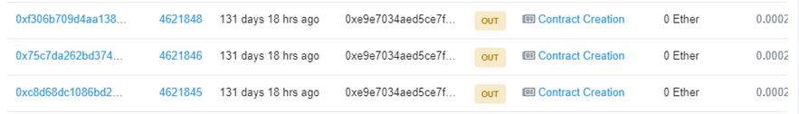
Clicking on the bottom transaction (the earliest one) reveals the contract address created for nonce 88:
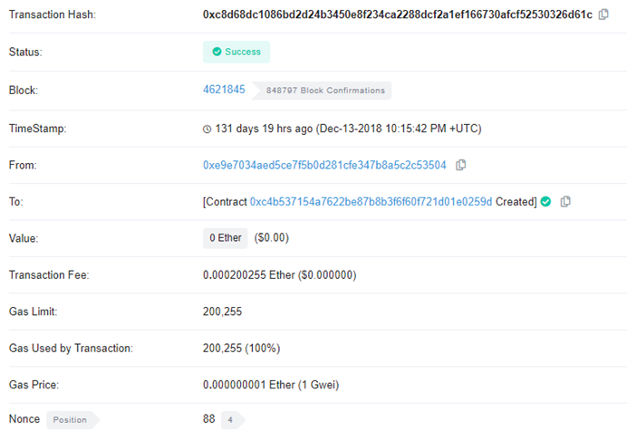
Clicking on the middle transaction, then reveals the contract address created for nonce 89:
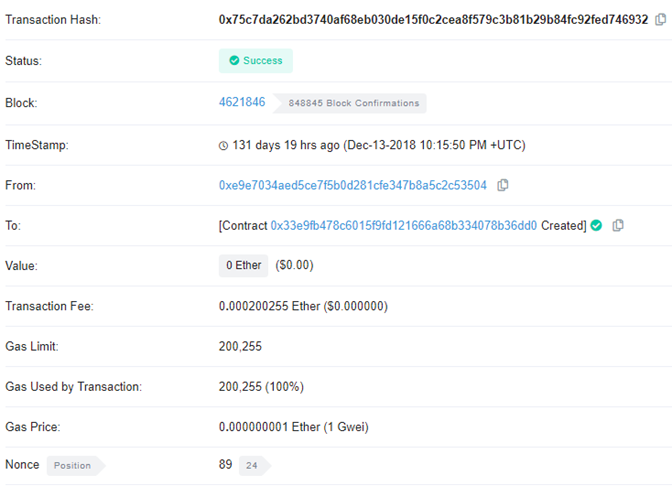
The main part of the contract code is below. The RainyDayFund contract, as part of its constructor, creates a DebugAuthorizer contract. DebugAuthorizer has a single-role: to allow debug functionality in RainyDayFund if it has been instantiated with an elite 1.337 ETH by setting a flag called debugMode. Within RainyDayFund's isManager() modifier, access to the contract funds is restricted to specific senders. However, if debugMode is enabled, this check is disabled and anyone (who is an authorized sender) can withdraw all funds in the contract.
contract DebugAuthorizer {
bool public debugMode;
constructor() public payable {
if (address(this).balance == 1.337 ether) { debugMode=true; }
}
}
contract RainyDayFund is CtfFramework {
address public developer;
mapping(address=>bool) public fundManagerEnabled;
DebugAuthorizer public debugAuthorizer;
constructor(address _ctfLauncher, address _player) public payable CtfFramework(_ctfLauncher, _player) {
//debugAuthorizer = (new DebugAuthorizer).value(1.337 ether)();
// Debug mode only used during development
debugAuthorizer = new DebugAuthorizer();
developer = msg.sender;
fundManagerEnabled[msg.sender] = true;
}
modifier isManager() {
require(fundManagerEnabled[msg.sender] ||
debugAuthorizer.debugMode() ||
msg.sender == developer,
"Unauthorized: Not a Fund Manager");
_;
}
function withdraw() external isManager ctf {
msg.sender.transfer(address(this).balance);
}
}There is an assumption in this contract that the DebugAuthorizer's contract address is not known in advance and has no ETH associated with it. When the RainyDayFund creates the contract, unless it has created the DebugAuthorizer contract with 1.337 ETH, debugMode will be disabled. Unfortunately, from the previous discussion on predicting contract addresses, we can easily predict the DebugAuthorizer's contract address and send 1.337 ETH to it *ahead of time* so that when the contract is created, it has 1.337 ETH and will enable debugMode in itself upon instantiation.
Examine the contract address that has created your RainyDayFund contract. From Etherscan, you can see that your wallet sends its ETH to the main CTF game contract at 0xdCB37036c66Bc6a5A19ccf0DBc0253e584499954 to deploy the level. The CTF game contract then calls RainyDayFund launcher contract at 0xeD0D5160c642492b3B482e006F67679F5b6223A2.
The RainyDayFund launcher contract then creates the level contract (e.g. the one in the UI) based on its nonce (which one can pull out from Etherscan). Finally, the level contract then creates the DebugAuthorizer contract via the "new" operator.
We wish to identify the address of the level contract and the address of the DebugAuthorizer contract ahead of time so we can send 1.337 ETH to the DebugAuthorizer address ahead of time. Using mk.py and the addresses found, we first need to find the nonces that generate all addresses
On EtherScan, bring up the level launcher contract (0xed0d5160c642492b3b482e006f67679f5b6223a2)
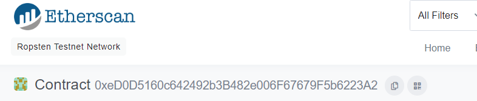
See the latest contracts it has created by clicking on "Internal Txns"
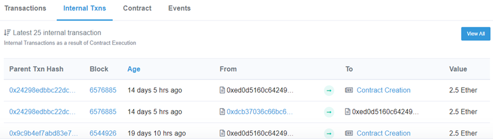
Click on the Txn Hash of the latest transaction to find the level launcher contract's nonce. This is what we can use to predict the next contract address that will be created (i.e. the one that will be given to us if we are the *next* player to launch this particular level). Within that transaction, click on "State Changes" 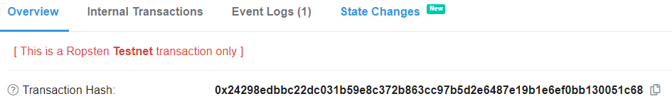
This reveals the nonces involved in the transaction.
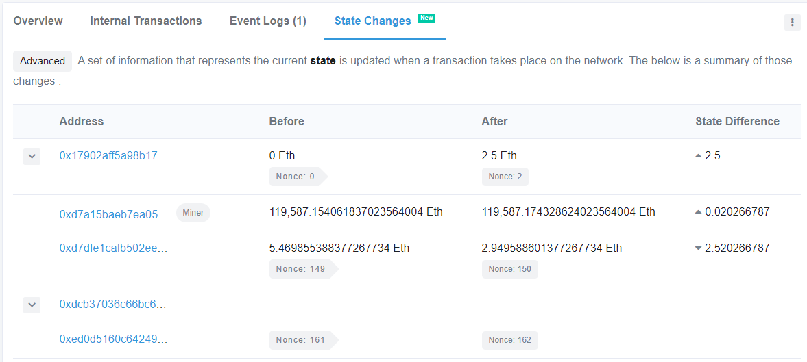
As this example shows, the level launcher goes from a Nonce of 161 to 162. Then, click on "Internal Transactions" to reveal the contract addresses that were created. As the screenshot shows, the level contract is created first at (0x17902afF5a98B17A88953Be54725f44E54f8A46B) and it creates the DebugAuthorizer contract at (0xf2427b0c5Ce1Ba6DbCC94C9Dd9a6b974A037126A)
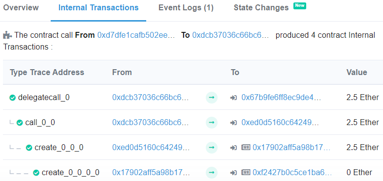
Run mk.py on the launcher address and on the level contract address to see if you can *generate* the two contract addresses of the last level contract creation. Note that the DebugAuthorizer contract is created by the level contract address and since it's the first transaction the address has performed, the nonce is 1)
% python mk.py
(on addr 0xeD0D5160c642492b3B482e006F67679F5b6223A2)
nonce: 161 contract: 0x17902afF5a98B17A88953Be54725f44E54f8A46B% python3 mk.py
(on addr 0x17902afF5a98B17A88953Be54725f44E54f8A46B)
nonce: 1 contract: 0xf2427b0c5Ce1Ba6DbCC94C9Dd9a6b974A037126AWe can now calculate the contract addresses for the next RainyDayFund level contract and its associated DebugAuthorizer contract as shown below.
% python mk.py
(on addr 0xeD0D5160c642492b3B482e006F67679F5b6223A2)
nonce: 162 contract: 0x7fEAfBBEF8dBD7966d0525d05227F75E64fDaed7% python3 mk.py
(on addr 0x7fEAfBBEF8dBD7966d0525d05227F75E64fDaed7)
nonce: 1 contract: 0x244e44daD27Fe7940EA5bb8bb5BE8Dceb20D1AdcAfter calculating the next DebugAuthorizer contract address, send it the requisite 1.337 ETH in Metamask. For the examples that follow, we have predicted a next level contract address of 0x7e8da8d4f1e8Fa7EcAe8389090011D20d67DEccd which creates a DebugAuthorizer contract at address 0x0ECD806e2b31ab1D9A44D0cf73514416AC1c9996
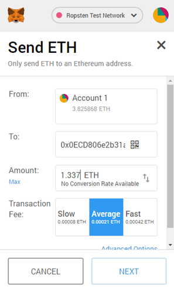
Then, go back to the CTF and reset the level. Assuming that no other player has reset their RainyDayFund level while you have been working on the prediction, the next contract address will be yours.
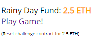
Check Contract address and DebugAuthorizer
Check to see that we have the predicted contract address after deploying the level.

Then verify the DebugAuthorizer address has been predicted accurately by accessing the variable via MyCrypto.
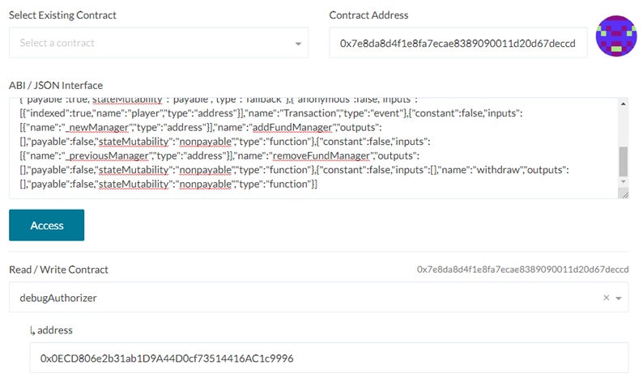
Finally, go to the DebugAuthorizer contract to validate that debugMode is true:
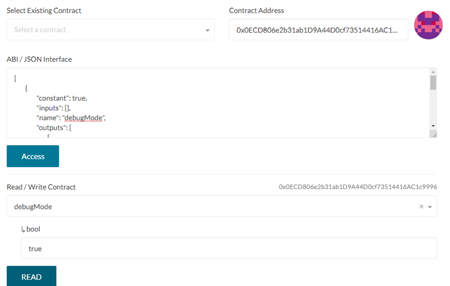
With debugMode enabled, isManager() now returns 'true'. Simply withdraw the funds via the withdraw() call to complete the level:
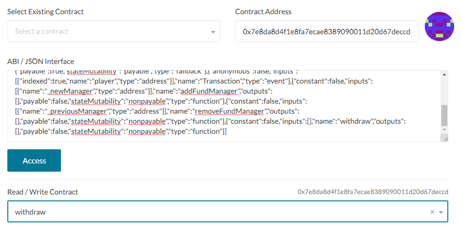
- Take level completion screenshots as before of the transaction to your wallet and the level with a 0 ETH balance.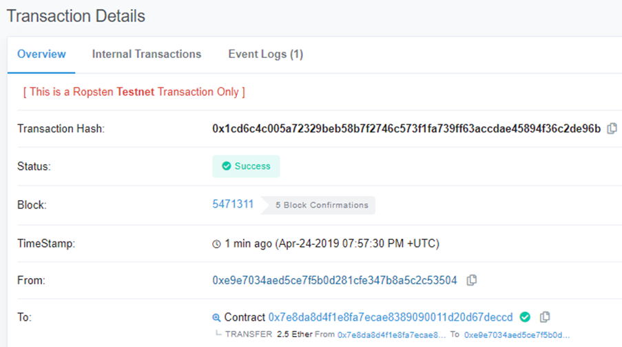
You have identified and exploited a variety of issues in smart contracts that result in the failure to understand the underlying system such as the behavior of block.number and the predictability of contract addresses.